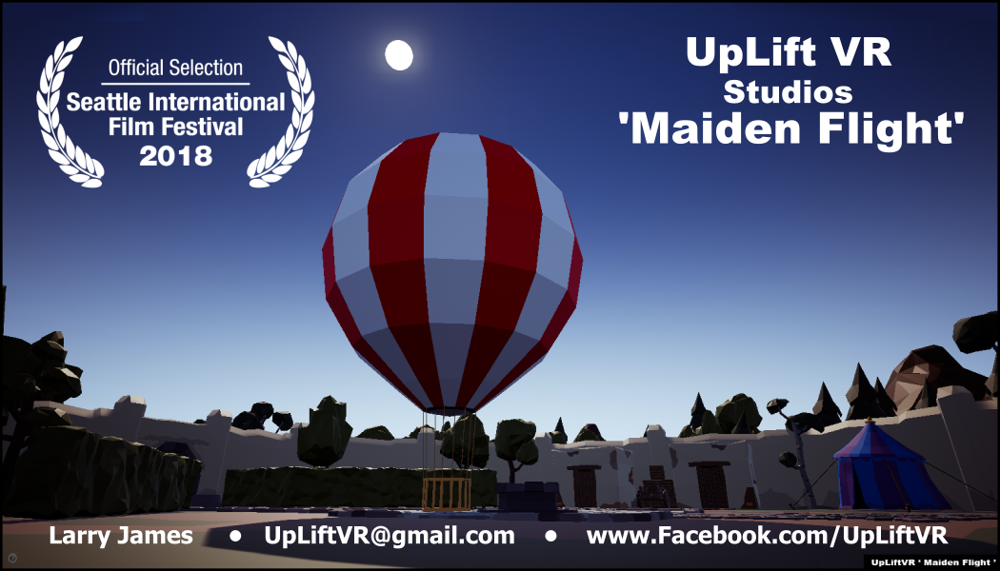
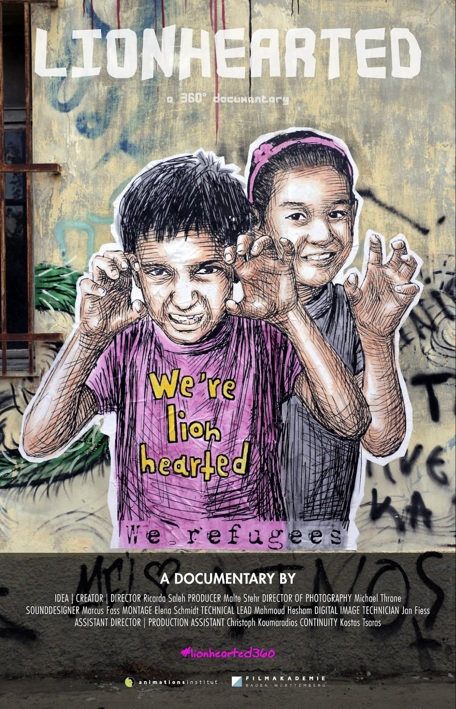
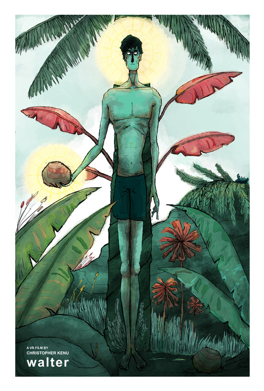
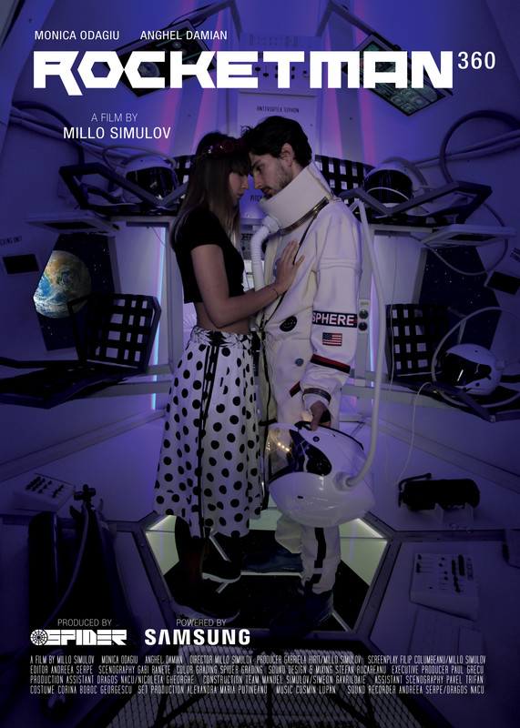
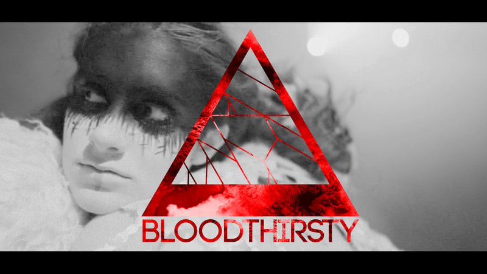

Kremfest 2018 Virtual Reality LineUp
“VR Maker Dome, Infinity Quest Present VR Experiences sponsored by Vuze Cameras, ImmersiveSquare and Wondertek Labs”
As a part of Kremfest 2018 we are presenting VR short films from around the world as well as UpLiftVR ‘Maiden Flight’ Balloon Ride and High Desert Eclipse. Feel as though you are lifting into the heavens or witness the stars aligning in the very sky above without ever leaving the venue. Partake in the Symbion Project’s new music video, “Bloodthirsty”, take a look behind the scenes through the eyes of an 8 year old at the Hotel City Plaza, a self-organised refugee shelter in Athens in the short VR documentary, “Lionhearted”. Explore a deserted island in the VR short, “Walter”, or get a special treat from a sweetie in “Rocketman”. Just in time for Halloween and all the way from India experience a haunted seance in “Crackle”.
With content from Germany, Romania, India, and the USA, you’ll travel through the 4th dimension of time and space in a HTC Vive or an Oculus GO.
State of the art VR recording of Kremfest will also be taking place throughout the festival so you can relive those builds and drops in HD 360 video after the fest!
✦
2018 Showcase Lineup at a Glance
- UpLiftVR ‘Maiden Flight’ Balloon Ride • Larry James & Julia Jackson • 3:30 min • Seattle, USA
- High Desert Eclipse • Larry James & Julia Jackson • 6:30 min • Seattle, USA
- Symbion Project - Bloodthirsty • Micah Knapp & Avielle Heath (Music by Kasson Crooker) • 6:17 min • Bellingham WA, USA
- Lionhearted • Ricarda Saleh (Produced by Malte Stehr) • 12:09 min • Hamburg, Germany
- Walter • Christopher Huang • 4:00 min • USA / Indonesia
- RocketMan 360 • Millo Simulov & Filip Columbeanu (Produced by Gabriela Stefania Hirit) • 20:00 min • Bucharest, Romania
- Crackle • Eddie Avil, Ashley Rodrigues, Saju Jose • 14:36 min • India
✦
Headline Experiences from UpLiftVR Studios

UpLiftVR ‘Maiden Flight’ Balloon Ride
By Larry James & Julia Jackson
Feeling as if you are lifting into the heavens on a balloon maiden flight you find yourself overlooking a wondrous lucid dreamlike land calling out to be explored.
While launching into the heavens on a balloon ride’s experimental flight, you find yourself overlooking a wondrous land calling out to be explored. During your descent from the clouds to the grounds below, you get the feeling that this could be just the beginning of a series of grand adventures.
- Genre: Animated / Interactive Cinematic VR Experience
- Runtime: 3:30 min
- Format: Room Scale VR - HTC Vive
- VR Comfort: Moderate
✦

High Desert Eclipse
By Larry James & Julia Jackson
From a remote majestic hilltop overlook the rapidly encroaching shadow of the moon turns day into twilight and the entire panoramic high desert scenic horizon becomes either sunrise or sunset.
High Desert Eclipse is a 360 short, filmed from a majestic hilltop overlook in the remote Oregon high desert during the great American eclipse of August 21, 2017. Spanning 120 seconds pre- and post-totality, the rapidly encroaching shadow of the moon turns day into twilight and the entire scenic horizon becomes either sunset or sunrise.
- Genre: 360° Documentary Short
- Runtime: 6:30 min
- Format: 4K 360° Video
- VR Comfort: Comfortable
✦
2018 Official Selections

Symbion Project - Bloodthirsty
By Micah Knapp & Avielle Heath (Music by Kasson Crooker)
Created by Shoreline WA electronic artist Symbion Project, 'Bloodthirsty' is a majestic slice of downtempo futuristic chamber-pop filled with charged atmospherics, featuring haunting vocals and a deft balance of clever minimalism and dark intensity. Features choreography and performance by Sorea Lear and Anna Thornton, produced and directed by Avielle Heath and Micah Knapp.
- Genre: Music Video / Theatrical
- Runtime: 6:17 min
- Format: 360 video
- VR Comfort: Comfortable
✦

Lionhearted
By Ricarda Saleh (Produced by Malte Stehr)
Rida is 8 years old. The extroverted girl fled with her family from Pakistan to Europe. Now she lives in Hotel City Plaza, a self-organised refugee shelter in Athens. In April 2016 a solidarity group occupied the empty hotel and created a shelter for over 400 refugees including 180 children. In Lionhearted, the viewer experiences Rida's world through 360° in an intimate, empathetic portrait.
Director Statement: In Lionhearted the viewer can experience Rida's world and immediate surroundings through 360°. It is an intimate piece and helps to understand the refugee crisis from a child's point of view.
- Genre: Documentary Short
- Runtime: 12:09 min
- Format: 360 video
- VR Comfort: Comfortable
✦

Walter
By Christopher Huang
A delightful and whimsical animated VR short about a man trying to survive on a deserted island.
Director Biography: Christopher Kenu Huang is an Indonesian Filmmaker / Visual Development artist with a background in 3D and VR development. His main focus is to design interesting characters and environments for compelling story ideas.
- Genre: 360 Animated Short
- Runtime: 4:00 min
- Format: 360 video
- VR Comfort: Comfortable
✦

RocketMan 360
By Millo Simulov & Filip Columbeanu (Produced by Gabriela Stefania Hirit)
A few minutes before launching toward Mars on a perilous interplanetary expedition, an astronaut receives an intimate 360 video transmission from his girlfriend back on Earth.
- Genre: SciFi Short Story
- Runtime: 20:00 min
- Format: 360 video
- VR Comfort: Comfortable
✦

Crackle
By Eddie Avil, Ashley Rodrigues, Saju Jose
A group of friends head out to a resort and find they are the only guests at a 100-acre homestay. Prodded to hold a séance, they unknowingly summon spirits at the exact site where two teenagers practiced witchcraft to attain immortality.
- Genre: VR Horror / Suspense
- Runtime: 14:36 min
- Format: 360 video (2D & 3D)
- VR Comfort: Intense
✦
✦
Curated & Presented by VR Maker Dome
VR Maker Dome, SIXR, and Infinity Quest present curated virtual reality experiences sponsored by Vuze Cameras, Wondertek Labs, and Immersive Square at Kremfest 2018.
Presenters, Production Partners & Sponsors